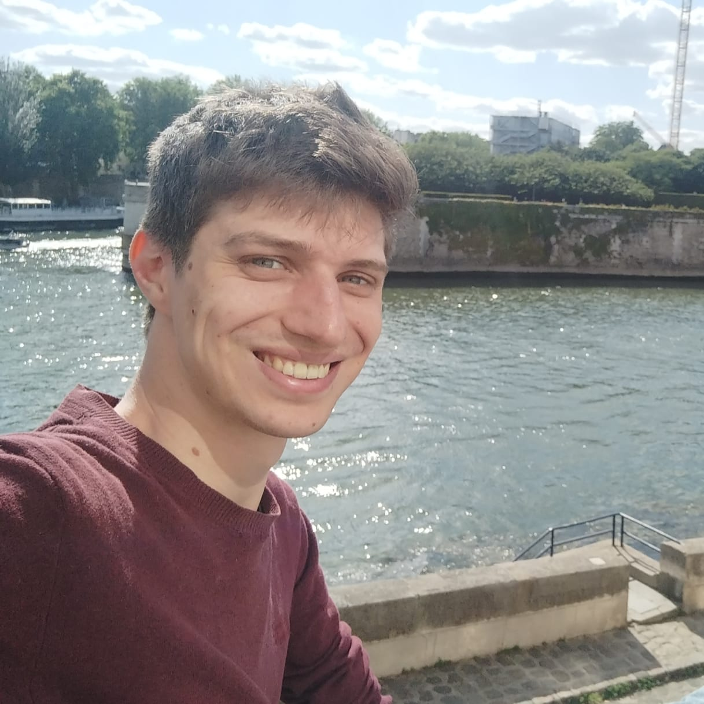

Lukas Renelt
Postdoctoral researcher in Numerical Analysis for Partial Differential Equations
Member of the
SERENA project team
at
INRIA Paris Centre
Contact: lukas.renelt[at]inria.fr
 ORCID (0009-0003-3161-5219)
ORCID (0009-0003-3161-5219)
About me
I am currently a postdoctoral researcher in the
SERENA team
at INRIA Paris, working with
Martin Vohralík
.
Until May 2025, I was at the University of Münster (Germany) under the supervision of Mario Ohlberger and Christian Engwer
Until May 2025, I was at the University of Münster (Germany) under the supervision of Mario Ohlberger and Christian Engwer
Research interests
A posteriori error estimation and adaptivity (Current research focus)
In the ANR/DFG project "RANPDEs: Robust Adaptivity for Nonlinear Partial Differential Equations" (2025-2028) we currently investigate new approaches for designing adaptive methods for nonlinear PDEs. The focus lies on the development of reliable and efficient a posteriori error estimators that can be used to steer adaptive mesh refinement strategies. In addition we want to prove optimality not only in terms of degrees of freedom but also in terms of computational time.We are organizing a workshop bringing together international experts on the topic, it will take place from 24.03.-26.03. at INRIA Paris. Participation is free of charge and also possible online, for more information see https://project.inria.fr/ranpdes/workshop-2026/.
Model Order Reduction for Friedrichs systems
During my PhD, I worked on the development and analysis of Model Order Reduction methods for parametrized Friedrichs' systems. These are a class of linear first-order PDEs that include, e.g., the advection-reaction equation, convection-diffusion problems, the linear elasticity equation or the Dirac-equation. As one part of my work, we investigated a novel approach utilizing an adjoint approach for a general well-posed variational formulation that lends itself to the application of Model Order Reduction techniques with minimal regularity requirements. We then proposed a two-stage reduction approach based on this adjoint formulation that does not require an explicit discretization of the infinite-dimensional trial space.Approximation theory in the context of parametrized PDEs
At the core of Model Order Reduction methods lies the approximation of the set consisting of all solutions of a parametrized PDE. The quality of this approximation can be measured in terms of Kolmogorov N-widths which characterizes the best possible error decay that can be achieved with an N-dimensional linear approximation space.With the application of parametrized Friedrichs systems in mind, we proposed a new interpretation that elevates these concepts to parameter-dependent function spaces where the established manifold-based intuition no longer applies.
Localized Model Order Reduction and "Localized Training" methods
In large-scale applications involving localized parametric variations in the coefficient data, localized model order reduction methods can significantly reduce the computational complexity. In particular, we are interested in the design and analysis of localized training algorithms for constructing local approximation spaces. These approaches can be combined with error estimation techniques leading to adaptive enrichment strategies.During my PhD, I worked on the development and analysis of localized model order reduction methods for parametrized Friedrichs' systems.
Publications and preprints
-
'Sectional Kolmogorov N-widths for parameter-dependent function spaces: A general framework with application to parametrized Friedrichs systems'
2025, (with Christian Engwer and Mario Ohlberger), submitted, [link] -
'Two-stage model reduction approaches for the efficient and certified solution of parametrized optimal control problems'
2025, (with Hendrik Kleikamp), in 'Journal of Scientific Computing (JSC)', [link] -
'Construction of local reduced spaces for Friedrichs' systems via randomized training'
2024, (with Christian Engwer and Mario Ohlberger), in 'Proceedings of the Conference Algoritmy', [link] -
'Model order reduction of an ultraweak and optimally stable variational formulation for parametrized reactive transport problems'
2023, (with Christian Engwer and Mario Ohlberger), in 'SIAM Journal of Scientific Computing (SISC)', [link] -
'An optimally stable approximation of reactive transport using discrete test and infinite trial spaces'
2023, (with Christian Engwer and Mario Ohlberger), in 'Finite Volumes for Complex Applications X - Volume 2, Hyperbolic and Related Problems', [link]
Upcoming conferences
I will be attending the following conferences - feel free to let me know in case you want to connect!
-
Workshop "Robust adaptivity for nonlinear partial differential equations"
Paris, France, 23.03. -- 25.03.2026
-
23rd European Finite Element Fair
Athens, Greece, 24.04. -- 25.04.2026 -
Computational Methods in Applied Mathematics (CMAM 2026)
Vienna, Austria, 20.07. -- 24.07.2026
Together with Alexei Gazca-Orozco, I am organizing a minisymposium on "Energy reduction methods and adaptivity for nonlinear PDEs".
Previous talks & conferences
- MORTech 2025 Poster presentation on 'Approximating solutions from parameter-dependent function spaces: A general framework with application to Friedrichs' systems' (Zaragoza, Spain, 26.11. -- 28.11.2025)
- Summer school "Optimality of adaptive finite element methods" (Bonn, Germany, 22.09. -- 26.09.2025)
- ENUMATH 2025 Poster presentation on 'Sectional Kolmogorov N-widths for parameter-dependent function spaces with application to Friedrichs systems' (Heidelberg, Germany, 01.09. -- 05.09.2025)
- SIAM Conference on Computational Science and Engineering (CSE25), Invited Minisymposium talk on 'Local and global approximation strategies for (parametrized) Friedrichs' systems' (Fort Worth, TX, United States, 03.03. -- 07.03.2025)
- Reduced-Order Modeling for Complex Engineering Problems, Invited plenary talk on 'Model order reduction and localization of Friedrichs' systems' (Chicago, IL, United States, 03.02. -- 07.02.2025)
- Model Order Reduction and Surrogate Modeling (MORe) 2024, Contributed talk on 'Efficient linear Model Order Reduction for Friedrichs' systems' (La Jolla, CA, United States, 09.09. -- 13.09.2024)
- pyMOR school and user meeting 2024, Invited talk on 'Custom linear algebra backends: Using pyMOR with dune-istl' (Münster, Germany, 26.08. -- 30.08.2024)
- Algoritmy 2024, Invited Minisymposium talk on 'Model Order Reduction for Friedrichs' systems' (Podbanske, Slovakia, 15.03. -- 20.03.2024)
- Young Mathematicians in Model Order Reduction (YMMOR) conference, Contributed talk on 'Model Order Reduction for Friedrichs' systems' (Stuttgart, Germany, 04.03. -- 08.03.2024)
- MORTech 2023, Poster on 'Model Order Reduction for inf-sup-stable problems' (Paris-Saclay, France, 22.11. -- 24.11.2023)
- FVCA 10, Poster on 'An optimally stable numerical scheme for reactive transport' (Strasbourg, France, 30.10. -- 03.11.2023)
- 7th DUNE user meeting, Workshop talk on 'Representation of parametric PDEs in DUNE-PDELab and application to model order reduction' (Dresden, Germany, 18.09. -- 19.09.2023)
- ENUMATH 2023, Minisymposium talk on 'Model Order Reduction for reaction-advection problems' in MS 'Reducing the irreducible: model order reduction for transport-dominated problems' (Lisbon, Portugal, 04.09. -- 08.09.2023)
- GAMM 2023, Minisymposium talk on 'An optimally stable discretization scheme for parametrized convection-dominated problems' in MS 'Numerical methods for differential equations' (Dresden, Germany, 30.05. -- 02.06.2023)
- Young Mathematicians in Model Order Reduction (YMMOR) conference, Contributed talk on 'Localized Model Order Reduction for convection-dominated problems using an optimally stable discretization' (Ulm, Germany, 20.03. -- 24.03.2023)
- Model Order Reduction and Surrogate Modeling (MORe) 2022, Participation (Berlin, Germany, 19.09. -- 23.09.2022)
- Young Mathematicians in Model Order Reduction (YMMOR) conference, Introductory talk 'Introduction to the Reduced basis Method' (Münster, Germany, 18.07. -- 22.07.2022)
- Young Mathematicians in Model Order Reduction (YMMOR) conference, Contributed talk 'Localized MOR for advection-dominated convection-diffusion problems' (Münster, Germany, 18.07. -- 22.07.2022)